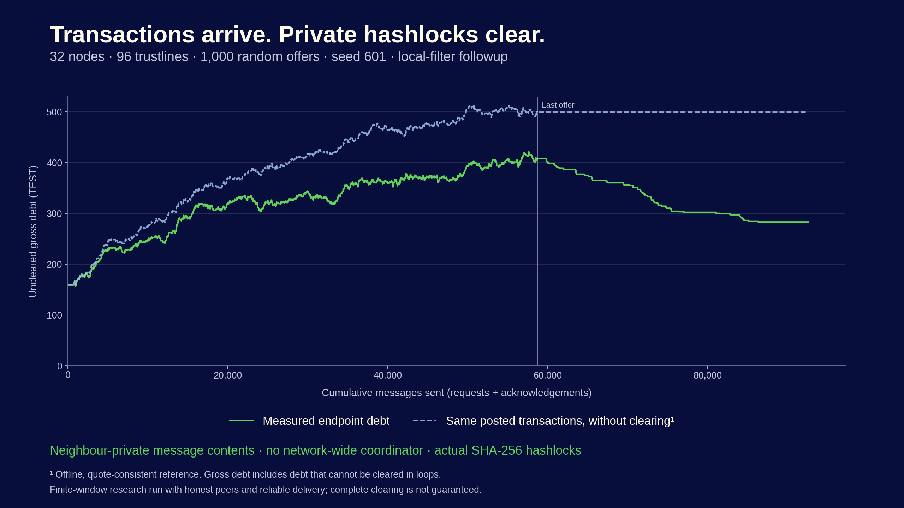
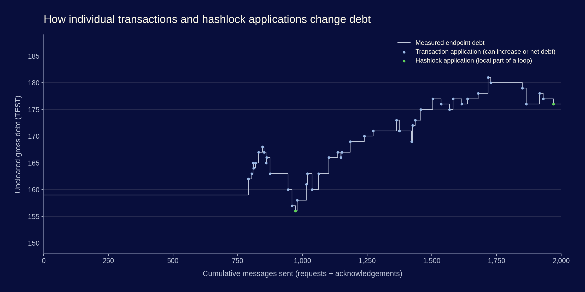
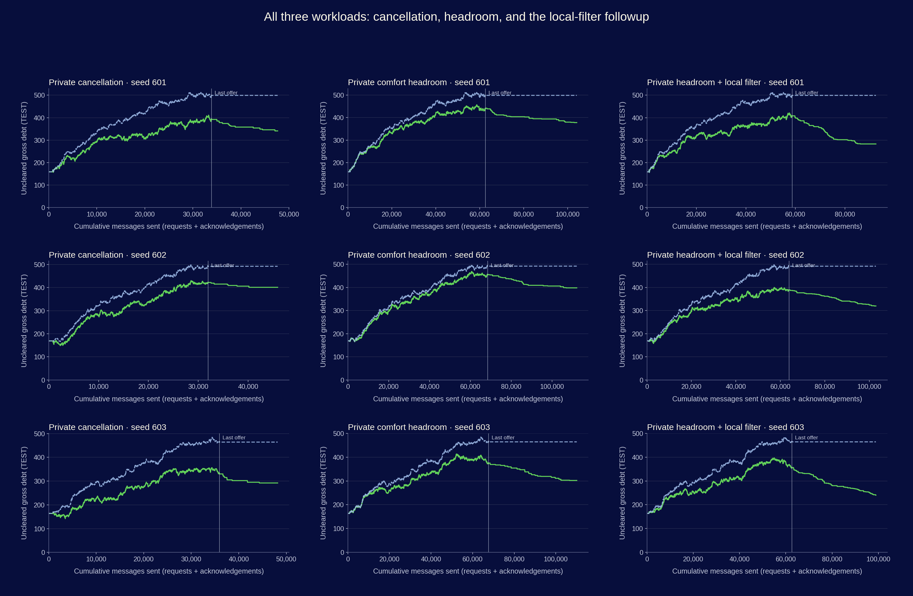

These actors use only their own balances, reservations and direct-neighbour messages. Any node can initiate a search. A loop initiator holds and releases its hashlock secret; there is no network-wide coordinator, membership list, route or hop count in participant messages. The simulator has a global delivery queue and a separate observer; neither chooses the winning loop or feeds a global score to nodes.

Across the three paired development workloads, early local filtering left 21.8% less gross debt with 9.8% fewer messages than the original private headroom candidate. This is an aggregate comparison on reused development seeds, not a held-out performance guarantee.
Against cancellation, the filtered headroom method left 18.5% less debt, but sent 2.08 times as many messages. It trades communication for additional clearing.
| Method | Seed | Posted / offered | Final debt | Reference debt | Complete loops | Messages | Payload MiB | Seconds | Offer backlog | Reservations |
|---|---|---|---|---|---|---|---|---|---|---|
| Private cancellation | 601 | 1000/1000 | 341 | 499 | 72 | 47,634 | 6.81 | 20.18 | 0 | 0 |
| Private comfort headroom | 601 | 1000/1000 | 378 | 499 | 67 | 104,184 | 19.75 | 57.23 | 0 | 0 |
| Private cancellation | 602 | 1000/1000 | 401 | 492 | 56 | 45,912 | 6.57 | 20.34 | 0 | 0 |
| Private comfort headroom | 602 | 1000/1000 | 398 | 492 | 54 | 112,180 | 21.27 | 60.53 | 0 | 0 |
| Private cancellation | 603 | 1000/1000 | 292 | 464 | 75 | 48,194 | 6.89 | 21.00 | 0 | 0 |
| Private comfort headroom | 603 | 1000/1000 | 302 | 464 | 74 | 110,084 | 20.88 | 68.30 | 0 | 0 |
| Original comfort control | 601 | 1000/1000 | 499 | 499 | 0 | 8,768 | 1.55 | 4.94 | 0 | 0 |
| Private headroom + local filter | 601 | 1000/1000 | 283 | 499 | 161 | 92,548 | 17.58 | 50.14 | 0 | 0 |
| Private headroom + local filter | 602 | 1000/1000 | 320 | 492 | 139 | 102,938 | 19.55 | 56.27 | 0 | 0 |
| Private headroom + local filter | 603 | 1000/1000 | 240 | 464 | 154 | 98,924 | 18.79 | 54.14 | 0 | 0 |
Messages include actual peer request attempts plus ACK emissions, including preference setup, discovery, settlement and obligation traffic. Exact serialized JSON body bytes are counted; HTTP/TCP headers, credentials, client API transport and process isolation are excluded. Runtime is one illustrative host sample per run, including durable SQLite writes and instrumentation, excluding initialization, offline audits and plots. It is not production throughput. Raw summaries retain separate request/ACK counts, errors and retries.
The green curve is actual endpoint debtor-side debt after every local event, without smoothing. An in-flight operation may leave mirrored endpoints temporarily inconsistent. A local hashlock application is not counted as a completed loop until matching evidence exists at every participant. The dashed line replays exactly the external obligations incorporated into an offline quote-consistent shadow ledger, with no clearing. Dependencies that cannot be reconstructed remain pending. Balance quotes alone do not establish unique causal ordering after an ABA balance repetition.
A transaction can raise debt or reduce it by bilateral netting. Snapshot difference from the no-clearing reference is not cumulative clearing: later transactions can net differently in the two ledgers. The CSV separately reports cumulative debt reduction from incorporated completed loops. Uncleared gross debt includes non-circular debt; zero is generally not an attainable target.

The new private-local-nonexpansion-v1 policy permits original zero-balance trustlines
as comfort-zone headroom, with bilateral preferences and assistance opt-in checked on each edge.
Each participant's two local absolute balances may not increase in sum; the initiator must strictly reduce them.
Summing these local tests counts each edge twice, so a fully applied loop strictly reduces gross debt.
Cancellation uses existing debt edges only. Discovery shuffles eligible local neighbours instead of repeatedly
choosing the lexicographically first dead end. The original comfort policy is retained as a negative control.
The first headroom result used more messages and ended with more debt than cancellation. The three-run followup filters a continuation before forwarding when the receiving node's two-edge test would already reject it. It still chooses uniformly among all eligible neighbours, uses the same hash-bound consent policy, and rechecks quotes at prepare. These are paired development runs on the same seeds, not held-out validation. All seven original runs and all three followup runs are retained.
This is not a completeness or maximum-clearing proof. A five-edge loop with marginal gross-debt changes −1, −1, −1, +1, +1 is globally improving, but the participant between the two helper edges would increase its local exposure and refuses this policy. More retries cannot overcome that consent restriction. Discovering every remaining admissible loop also requires a liveness argument under concurrent searches. Privacy-preserving aggregate consent and distributed conflict recovery remain research work.
The following global diagnostic runs only after measurement and is never supplied to participants. Each true entry has an explicit remaining one-unit cycle witness in residual-diagnostics.json. A beneficial headroom witness may require consent beyond the present local nonexpansion policy; it is not a private discovery result.
| Method | Workload | Debt cycle remains | Improving headroom cycle remains |
|---|---|---|---|
| Private cancellation | private32-seed601 | True | True |
| Private comfort headroom | private32-seed601 | True | True |
| Private cancellation | private32-seed602 | True | True |
| Private comfort headroom | private32-seed602 | True | True |
| Private cancellation | private32-seed603 | True | True |
| Private comfort headroom | private32-seed603 | True | True |
| Original comfort control | private32-seed601 | True | True |
| Private headroom + local filter | private32-seed601 | False | True |
| Private headroom + local filter | private32-seed602 | True | True |
| Private headroom + local filter | private32-seed603 | True | True |
In these measurements, all three filtered runs still have a witnessed improving headroom loop that satisfies the current local nonexpansion rule. Seeds 602 and 603 also retain ordinary debt cycles. Thus the observed remaining gap includes finite-window discovery limits, separately from the five-edge counterexample demonstrating the policy's general incompleteness.

Independent replay: see audit results. The 116-test MDG2 benchmark suite and 111-test app suite passed. Python 3.12.14; SQLite 3.53.1; plotting matplotlib 3.10.8. The exact source/input SHA-256 pins are in source-freeze.json. Raw gzip journals contain every measured event and exact credential-free message body. Fresh cryptographic secrets and receipt timestamps are not seeded; seeded fixtures and routing choices do not imply byte-identical output on replay.
The earlier 100% benchmark is a coordinated exact reference, with membership/path knowledge and serialized epochs. It does not establish the privacy or coordinator-free claims tested here.